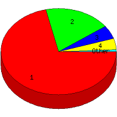

Week of 1/10/2010 to 1/16/2010: Top
5 of
5 File Types (Extensions)
Sorted by Access Count
Individual file types as determined by file extensions. All URLs that
do not contain an extension are counted as directories.

| Rank |
Type |
Accesses |
% |
Bytes |
% |
| 1 |
Directory (folder)
|
88 |
71.54 |
64,892 |
11.60 |
| 2 |
htm
|
23 |
18.70 |
66,597 |
11.91 |
| 3 |
jpg
|
6 |
4.88 |
379,958 |
67.94 |
| 4 |
gif
|
5 |
4.07 |
47,544 |
8.50 |
| 5 |
php
|
1 |
0.81 |
271 |
0.05 |